Analisis Model Forecaster Explainability#
Sumber asli notebook: https://skforecast.org/0.15.1/user_guides/explainability.html
Source Code (Jupyter Notebook): Download file di sini (Catatan: File hanya tersedia untuk diunduh)
Prerequisites dan Instalasi#
Install Library#
!pip install pandas matplotlib shap scikit-learn lightgbm skforecast
Import Library#
# Libraries
# ==============================================================================
import pandas as pd
import matplotlib.pyplot as plt
import shap
from sklearn.inspection import permutation_importance
from sklearn.inspection import PartialDependenceDisplay
from lightgbm import LGBMRegressor
from skforecast.datasets import fetch_dataset
from skforecast.recursive import ForecasterRecursive
Catatan perubahan penting sebelum menjalankan notebook:
Parameter
regressorpadaForecasterRecursivetelah diganti menjadiestimatordi versi skforecast terbaru. Pastikan menggunakan nama parameterestimatorseperti pada kode di notebook ini, bukanregressor.Jalankan di Google Colab atau Jupyter Notebook lokal. Tidak bisa dijalankan langsung sebagai skrip
.pybiasa karena beberapa output SHAP (sepertiforce_plot) membutuhkan rendering HTML/JavaScript interaktif dari Jupyter.
Analisa Prediksi tentang Apa?#
Notebook ini menganalisa prediksi permintaan listrik harian (electricity demand) di wilayah Victoria, Australia, menggunakan dataset vic_electricity dari library skforecast.
Tujuannya bukan sekadar memprediksi, melainkan menjelaskan mengapa model membuat prediksi tertentu - proses ini disebut explainability. Tiga metode explainability yang digunakan:
Feature Importance - seberapa besar kontribusi tiap fitur terhadap keputusan model secara global
SHAP Values - kontribusi tiap fitur terhadap setiap prediksi individual
Partial Dependence Plots (PDP) - bagaimana pengaruh satu fitur terhadap output prediksi jika fitur lain dianggap konstan
Bagaimana Bentuk Data Trainingnya?#
Data asli berbentuk time series dengan dua kolom utama:
Kolom |
Keterangan |
|---|---|
|
Total permintaan listrik harian (sum) |
|
Rata-rata suhu harian (mean) |
Setelah diubah ke format supervised oleh forecaster, Input (X_train) berisi:
Kolom |
Keterangan |
|---|---|
|
Nilai Demand 1 hari sebelumnya |
|
Nilai Demand 2 hari sebelumnya |
… |
… |
|
Nilai Demand 7 hari sebelumnya |
|
Suhu rata-rata pada hari yang diprediksi (exogenous variable) |
Output (y_train) adalah nilai Demand pada hari yang ingin diprediksi.
Jadi setiap baris dalam training matrix merepresentasikan: “Berdasarkan permintaan listrik 7 hari terakhir dan suhu hari ini, berapakah permintaan listrik hari ini?”
Apa itu Lag?#
Lag adalah nilai dari variabel target pada waktu-waktu sebelumnya yang dijadikan fitur input untuk memprediksi nilai saat ini.
Data time series secara alami hanya memiliki satu kolom nilai (misalnya Demand per hari) - ini bersifat unsupervised dan tidak bisa langsung digunakan oleh model machine learning yang membutuhkan format input-output (supervised). Untuk mengatasinya, data diubah ke format supervised dengan cara menggeser (shift) kolom nilai tersebut mundur sejumlah periode.
Contoh konkret dengan lags = 7:
Tanggal | lag_7 | lag_6 | lag_5 | lag_4 | lag_3 | lag_2 | lag_1 | Demand (target)
------------|-------|-------|-------|-------|-------|-------|-------|----------------
2014-01-08 | D1 | D2 | D3 | D4 | D5 | D6 | D7 | D8
2014-01-09 | D2 | D3 | D4 | D5 | D6 | D7 | D8 | D9
Pada notebook ini digunakan lags = 7, artinya model menggunakan data 7 hari terakhir sebagai input untuk memprediksi hari berikutnya.
Jelaskan Proses Analysis yang Dilakukan#
Step 1 - Download Data#
# Download data
# ==============================================================================
data = fetch_dataset(name="vic_electricity")
data.head(3)
Output:
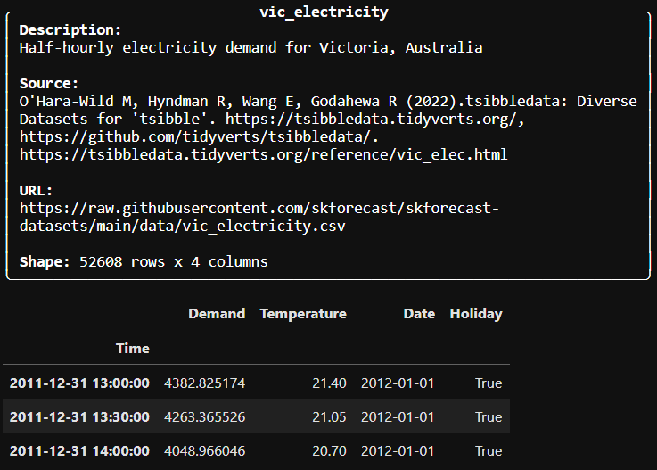
Step 2 - Agregasi ke Frekuensi Harian#
# Aggregation to daily frequency
# ==============================================================================
data = data.resample('D').agg({'Demand': 'sum', 'Temperature': 'mean'})
data.head(3)
Output:
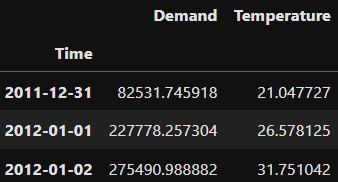
Step 3 - Split Train dan Test#
# Split train-test
# ==============================================================================
data_train = data.loc[: '2014-12-21']
data_test = data.loc['2014-12-22':]
Step 4 - Training ForecasterRecursive#
# Create a recursive multi-step forecaster (ForecasterRecursive)
# ==============================================================================
forecaster = ForecasterRecursive(
estimator = LGBMRegressor(random_state=123, verbose=-1),
lags = 7
)
forecaster.fit(
y = data_train['Demand'],
exog = data_train['Temperature']
)
forecaster
Model yang digunakan adalah LGBMRegressor (LightGBM) yang dibungkus oleh ForecasterRecursive dari skforecast. Dengan lags = 7, forecaster secara otomatis membentuk 7 fitur lag dari kolom Demand. Variabel Temperature berfungsi sebagai exogenous variable - fitur tambahan yang diketahui nilainya di masa depan.
Output:
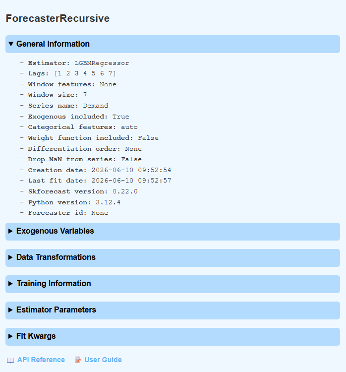
Step 5 - Feature Importance#
# Predictors importances
# ==============================================================================
forecaster.get_feature_importances()
Menampilkan skor kepentingan tiap fitur (lag_1 hingga lag_7 dan Temperature) berdasarkan kalkulasi internal LightGBM.
Output:
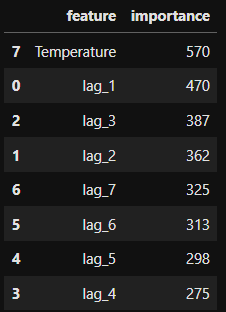
Step 6 - Buat Training Matrix#
# Training matrices used by the forecaster to fit the internal regressor
# ==============================================================================
X_train, y_train = forecaster.create_train_X_y(
y = data_train['Demand'],
exog = data_train['Temperature']
)
display(X_train.head(3))
display(y_train.head(3))
Output:
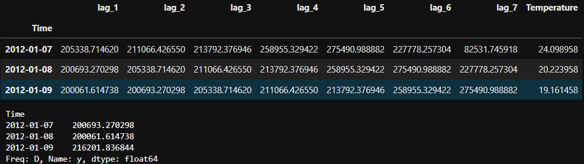
Step 7 - Buat SHAP Explainer#
# Create SHAP explainer
# ==============================================================================
shap.initjs()
explainer = shap.TreeExplainer(forecaster.estimator)
shap_values = explainer.shap_values(X_train)
Step 8 - SHAP Summary Plot (Bar)#
# SHAP Summary Plot
shap.summary_plot(shap_values, X_train, plot_type="bar")
Menampilkan kepentingan global tiap fitur berdasarkan rata-rata absolut nilai SHAP.
Output:
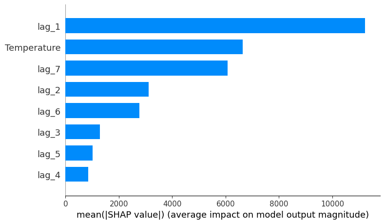
Step 9 - SHAP Summary Plot (Beeswarm)#
# SHAP Summary Plot
shap.summary_plot(shap_values, X_train)
Menampilkan distribusi nilai SHAP untuk setiap fitur di seluruh sampel training. Warna menunjukkan nilai fitur (merah = tinggi, biru = rendah).
Output:
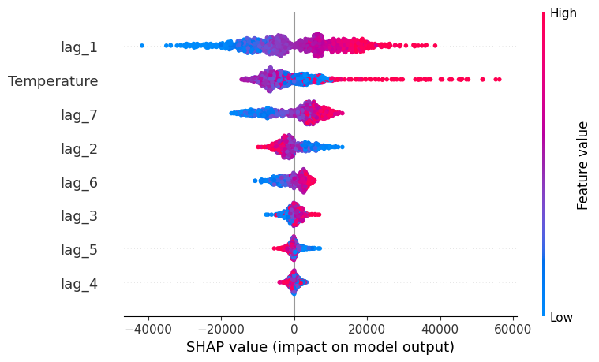
Step 10 - SHAP Force Plot (Satu Observasi)#
# Force plot for the first observation
# ==============================================================================
shap.force_plot(explainer.expected_value, shap_values[0, :], X_train.iloc[0, :])
Menampilkan kontribusi tiap fitur untuk satu prediksi pertama. Fitur yang mendorong nilai prediksi naik ditampilkan merah, yang menurunkan nilai ditampilkan biru.
Output:
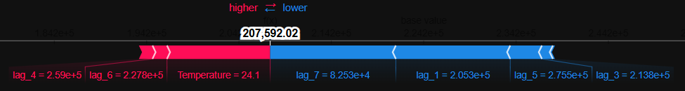
Step 11 - SHAP Force Plot (200 Observasi)#
# Force plot for the first 200 observations in the training set
# ==============================================================================
shap.force_plot(explainer.expected_value, shap_values[:200, :], X_train.iloc[:200, :])
Menampilkan force plot secara interaktif untuk 200 observasi pertama sekaligus, sehingga pola kontribusi fitur bisa diamati secara keseluruhan.
Output:
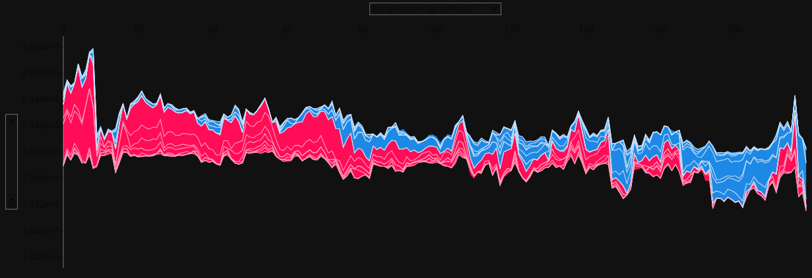
Step 12 - SHAP Dependence Plot (Temperature)#
# Dependence plot for Temperature
# ==============================================================================
fig, ax = plt.subplots(figsize=(7, 4))
shap.dependence_plot("Temperature", shap_values, X_train, ax=ax)
Menampilkan hubungan antara nilai fitur Temperature dengan nilai SHAP-nya, sekaligus memperlihatkan interaksi dengan fitur lain melalui warna titik.
Output:
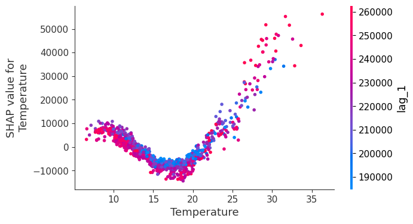
Step 13 - Prediksi 10 Hari ke Depan#
# Predict
# ==============================================================================
predictions = forecaster.predict(steps=10, exog=data_test['Temperature'])
predictions
Menghasilkan prediksi Demand untuk 10 hari ke depan menggunakan data suhu dari test set sebagai exogenous variable.
Output:
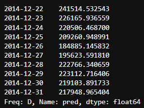
Step 14 - Buat Matrix Input Prediksi#
# Create input matrix for predict method
# ==============================================================================
X_predict = forecaster.create_predict_X(steps=10, exog=data_test['Temperature'])
X_predict
create_predict_X menghasilkan matrix input yang sama persis dengan yang digunakan forecaster.predict() secara internal. Diperlukan agar SHAP bisa menjelaskan setiap hasil prediksi.
Output:
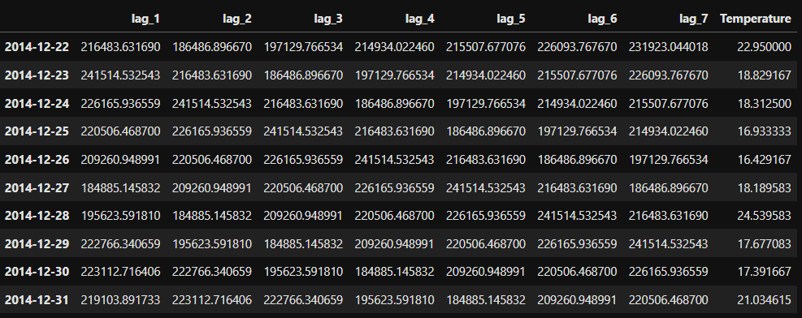
Step 15 - SHAP Force Plot pada Hasil Prediksi#
# Force plot for a specific prediction
# ==============================================================================
predicted_date = '2014-12-22'
iloc_predicted_date = X_predict.index.get_loc(predicted_date)
shap_values = explainer.shap_values(X_predict)
shap.force_plot(
explainer.expected_value,
shap_values[iloc_predicted_date, :],
X_predict.iloc[iloc_predicted_date, :]
)
Menerapkan SHAP pada matrix prediksi - bukan data training - untuk melihat mengapa model memprediksi nilai tertentu pada tanggal 2014-12-22.
Output:
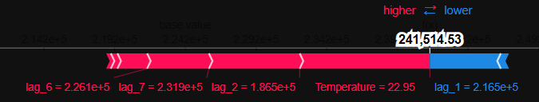
Step 16 - Permutation Importance#
# Training matrices used by the forecaster to fit the internal regressor
# ==============================================================================
X_train, y_train = forecaster.create_train_X_y(
y = data_train['Demand'],
exog = data_train['Temperature']
)
# Permutation importances
# ==============================================================================
r = permutation_importance(
estimator = forecaster.estimator,
X = X_train,
y = y_train,
n_repeats = 3,
max_samples = 0.5,
random_state = 123
)
importances = pd.DataFrame({
'feature' : X_train.columns,
'mean_importance' : r.importances_mean,
'std_importance' : r.importances_std
}).sort_values('mean_importance', ascending=False)
importances
create_train_X_y dipanggil ulang di sini untuk memastikan X_train dan y_train tersedia. Permutation importance mengukur seberapa besar performa model turun ketika nilai satu fitur diacak - berbeda dari feature importance bawaan LightGBM yang berbasis struktur pohon.
Output:
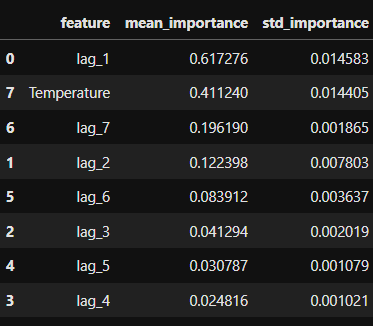
Step 17 - Partial Dependence Plot#
# Scikit-learn partial dependence plots
# ==============================================================================
fig, ax = plt.subplots(figsize=(9, 4))
ax.set_title("Decision Tree")
pd.plots = PartialDependenceDisplay.from_estimator(
estimator = forecaster.estimator,
X = X_train,
features = ["Temperature", "lag_1"],
kind = 'both',
ax = ax,
)
ax.set_title("Partial Dependence Plot")
fig.tight_layout();
PDP menunjukkan pengaruh marginal satu fitur (Temperature dan lag_1) terhadap nilai prediksi, dengan menganggap fitur lain konstan. Parameter kind='both' menampilkan garis rata-rata sekaligus garis individual per sampel (ICE - Individual Conditional Expectation).
Output:
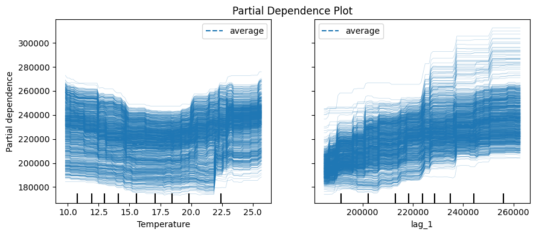